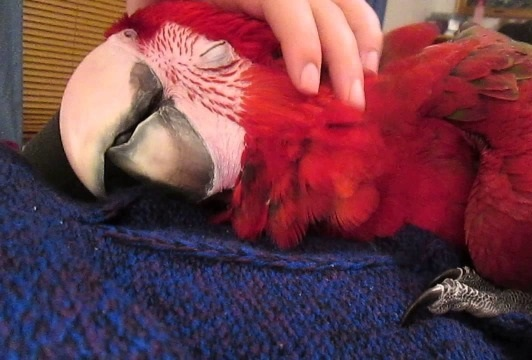

Наталья Орсаг
Контакты:
GitHub
+7 (916) 672 12 29
nvorsag@edu.hse.ru
Ара населяют тропические леса. Предпочитают держаться в кронах высоких деревьев. Питаются в основном растительной пищей: плодами, орехами, молодыми побегами деревьев и кустарников. В период созревания сельскохозяйственных культур летают кормиться на поля и плантации, чем приносят ощутимый урон урожаю. Википедия